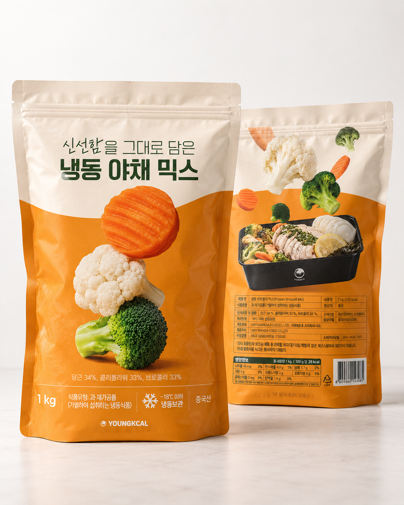
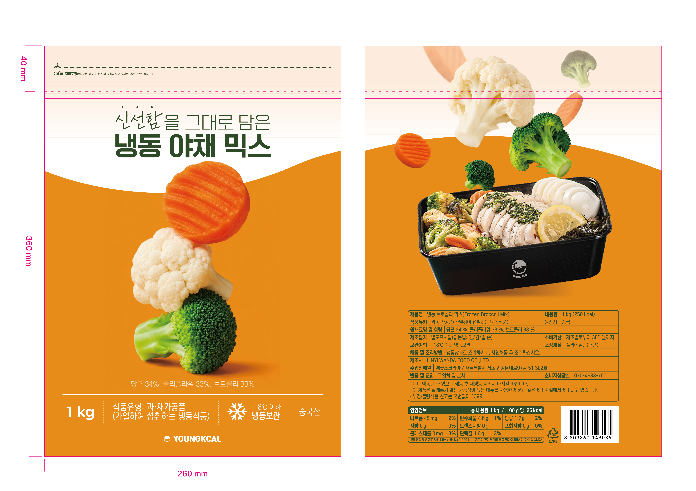
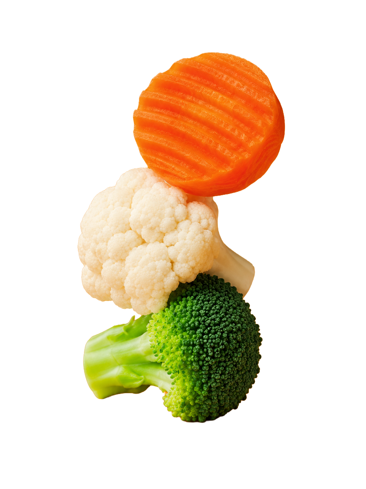
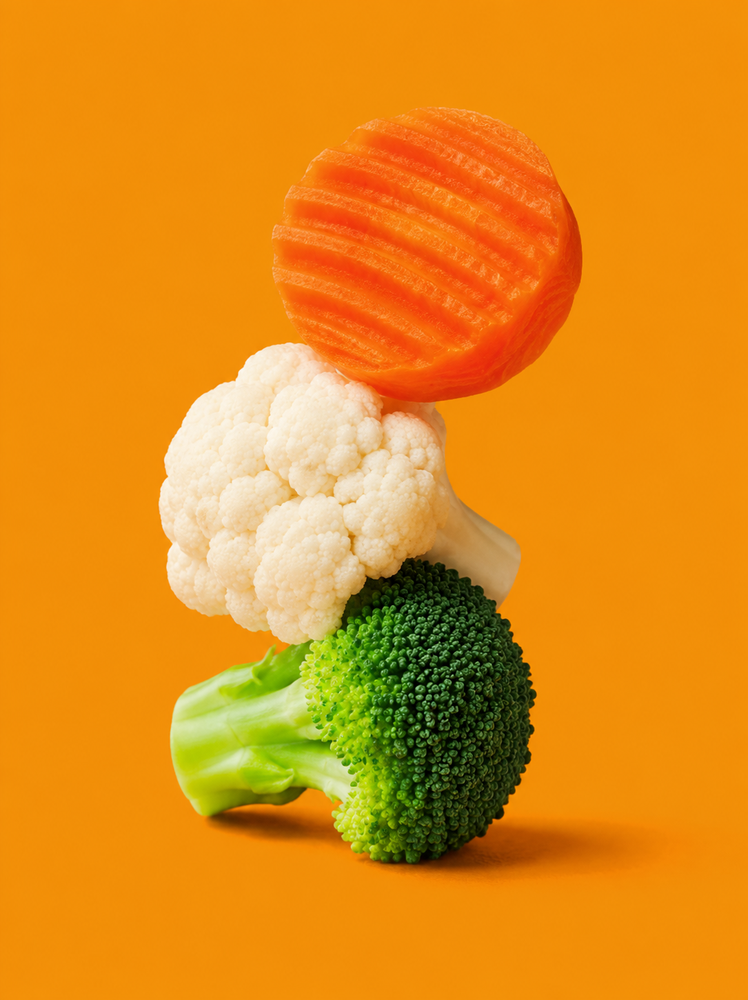
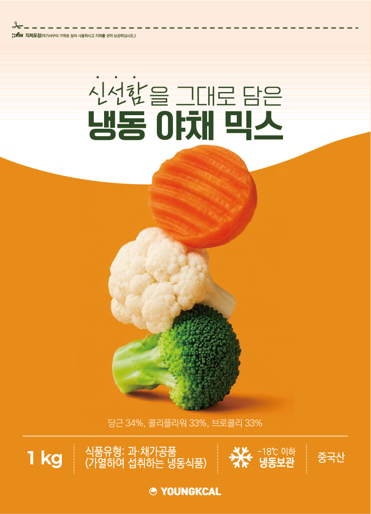
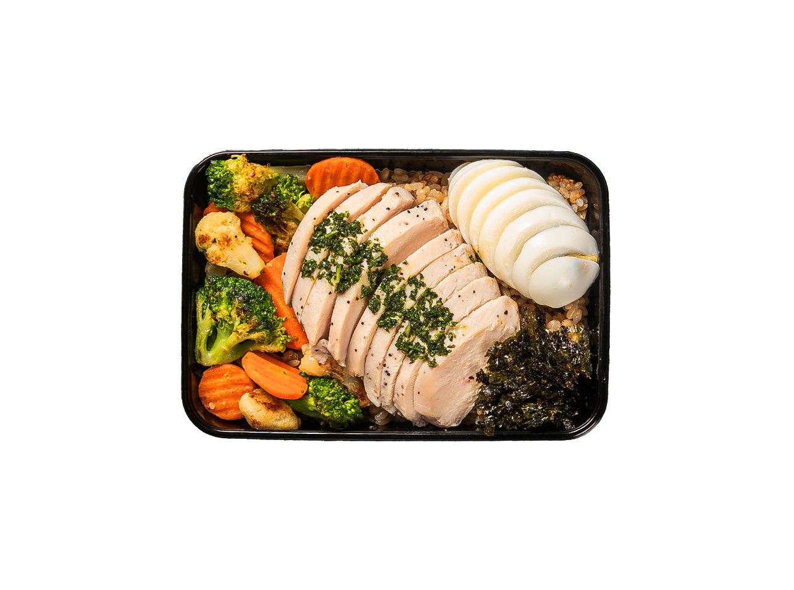
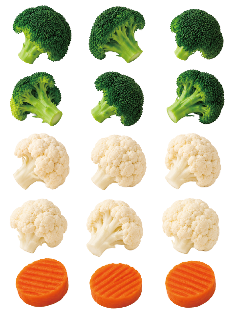
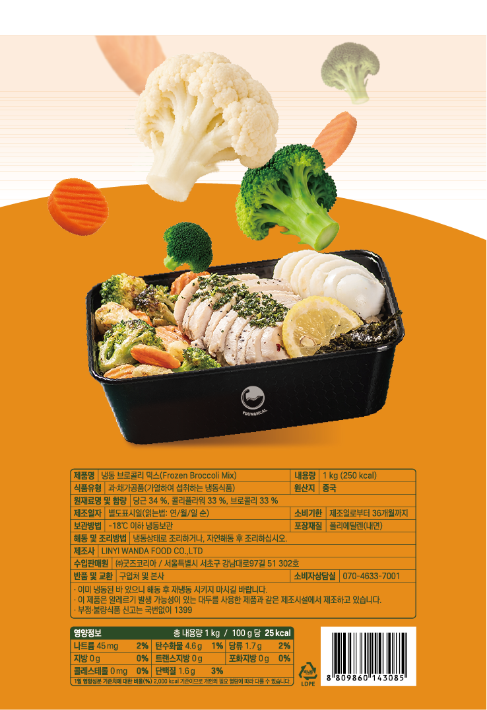

야채 믹스 패키지 디자인
신선한 야채의 이미지를 직관적으로 전달하기 위한 패키지 디자인입니다.
Tool


Role
Package Design, AI Image Direction, Visual Editing
Year
2026.06
Context
구오컴퍼니
Design
패키지 전면 디자인은 제품명을 명확하게 전달하면서도 야채의 컬러감을
시각적으로 살릴 수 있도록 구성했습니다.
정보는 간결하게
정리하고, 전체적으로 건강하고 신선한 브랜드 이미지를 유지했습니다.


Design Process
앞면은 생성형 AI를 활용해 브로콜리, 콜리플라워, 당근 이미지를
제작했습니다.
냉동식품이 줄 수 있는 차가운 인상을 보완하고,
야채의 초록색과 흰색이 더욱 선명하게 보일 수 있도록 주홍색 배경을
적용했습니다.
이후 포토샵에서 야채 오브젝트의 그림자를 제작해 입체감을 더하고,
제품명과 제품 정보를 배치해 앞면 디자인을 완성했습니다.
뒷면은 기존 도시락 이미지를 3D 형태로 재구성하고, 다양한 각도의
야채 이미지를 제작해 합성했습니다.





